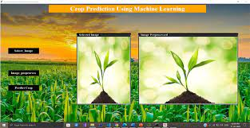

Projects
-
Crop yield prediction using machine learning

-
Now-a-days, food production and prediction is getting depleted due to unnatural climatic changes, which will adversely affect the economy of farmers by getting a poor yield and also help the farmers to remain less familiar in forecasting the future crops. This product helps the beginner farmer in such a way to guide them for sowing the reasonable crops by deploying machine learning, one of the advanced technologies in crop prediction. Naive Bayes, a supervised learning algorithm puts forth in the way to achieve it. The seed data of the crops are collected here, with the appropriate parameters like temperature, humidity and moisture content, which helps the crops to achieve a successful growth. The users are encouraged to enter parameters like temperature and their location will be taken automatically in this application in order to start the prediction process.